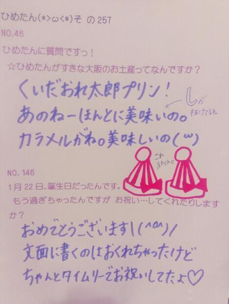

| 2013/04 06 Sat | ひめたん(*>ω<*)そ の281 |
質問いっぱいありがとーう＊
またゆっくり時間をかけてお答えしていくので
楽しみにしててくださいませ。

写めはシャキイズムでっすー
ほんとにごめんね。最近の写めがないことに
気づいてしまったのよ...
ちょ、明日あさっては撮るから！ほんとに！
荷造り終わったよー♪
明日出発して新潟、名古屋とおじゃましますー
ライブも握手会も楽しみすぎてぱあ＼(^^)／
お泊まりの荷物をね
あしゅーしゅ と確認しておりますよ
この月曜日からずーっと。
ええ今もしてますよ。ふっへへへ
それがねー困ったことにねー
「これいるかなー？」「どんなカバンー？」
みたいな話なんだけど
お互いに決めらんない人なの！
だからふたりで
ねーどうするー？
あたしはあなたに合わせるつもりなんだけどー
えーあたしだって決めらんないわよー
あたしはあなたに合わせるつもりなんだけどー
えーあたしだって決めらんないわよー
あたしはあなたに合わせるつもりなんだけどー
えーあたしだって決めらんないわよー
あたしはあなたに以下略
こんなのを永遠に。やっておりますええ
新潟は乃木坂ライブ初ということで
個人的に初上陸ということで
もうねーどきどきわくわくきゅるるーん
明日行くよーて方は
今までとはまた違う新鮮な雰囲気のライブを
お届けできたらな、と思っております！
ライブ感を大切にするってのは
いつも心がけておりますけれどもねー
アオーレ一周年誕生祭てことで
みさみさ 、 まりっか と一緒にライブの他に
朝のね生放送の方にも
出演させていただくということで(｀・ω・´)
だから、ぼくわたしのいえ
放送うつるぜって方は見てねー☆
そして名古屋全握は 真夏 とぺあ∩^ω^∩初！
まなったーんぬよろしくね＊
真夏ふぁんのみなさんよろしくお願いしますっ
ライブも楽しみー♪
名古屋はちょっと久々です
名古屋市民のみなさまおじゃまいたしま！
またゆっくり時間をかけてお答えしていくので
楽しみにしててくださいませ。
写めはシャキイズムでっすー
ほんとにごめんね。最近の写めがないことに
気づいてしまったのよ...
ちょ、明日あさっては撮るから！ほんとに！
荷造り終わったよー♪
明日出発して新潟、名古屋とおじゃましますー
ライブも握手会も楽しみすぎてぱあ＼(^^)／
お泊まりの荷物をね
あしゅーしゅ と確認しておりますよ
この月曜日からずーっと。
ええ今もしてますよ。ふっへへへ
それがねー困ったことにねー
「これいるかなー？」「どんなカバンー？」
みたいな話なんだけど
お互いに決めらんない人なの！
だからふたりで
ねーどうするー？
あたしはあなたに合わせるつもりなんだけどー
えーあたしだって決めらんないわよー
あたしはあなたに合わせるつもりなんだけどー
えーあたしだって決めらんないわよー
あたしはあなたに合わせるつもりなんだけどー
えーあたしだって決めらんないわよー
あたしはあなたに以下略
こんなのを永遠に。やっておりますええ
新潟は乃木坂ライブ初ということで
個人的に初上陸ということで
もうねーどきどきわくわくきゅるるーん
明日行くよーて方は
今までとはまた違う新鮮な雰囲気のライブを
お届けできたらな、と思っております！
ライブ感を大切にするってのは
いつも心がけておりますけれどもねー
アオーレ一周年誕生祭てことで
みさみさ 、 まりっか と一緒にライブの他に
朝のね生放送の方にも
出演させていただくということで(｀・ω・´)
だから、ぼくわたしのいえ
放送うつるぜって方は見てねー☆
そして名古屋全握は 真夏 とぺあ∩^ω^∩初！
まなったーんぬよろしくね＊
真夏ふぁんのみなさんよろしくお願いしますっ
ライブも楽しみー♪
名古屋はちょっと久々です
名古屋市民のみなさまおじゃまいたしま！

 玲香ちゃんとの写メのせてください♪
玲香ちゃんとの写メのせてください♪
承った(｀・ω・´)待っててねー☆
ひめたんはちゃんと
お父さんからの電話出る？笑
えー出るでるめっちゃでますよー
ひめたんはぱぱと仲良しなのよ♪
ひめたんはエクセル派スタバ派？
それとも私の バイト先、ドトール派？(笑)
ドトールのお姉さんなのね(・o・ノ)ノ
ドトールもスタバももちろん好きだけど
本命はエクセルシオールかな＊
スタバなんかは、ちょっとお姉さんの味よねー
エクセルのココアの甘すぎる感じが
もうっ大好きっ///
ひめたんが かわいすぎるときは
どーすればいいんですか？
写めをどゅくしっ☆
朝起きるときいつもどうしてる〜？
(深刻な悩み)
あのねーそれに関してはまじで
結構寝起きいいんだよねひめたーん('・・`)
小１の頃からコラショの目覚ましで起きてたんで
あんまし寝坊とかないです。
ま断言もできんけども。
じゃあいっこ提案するならば
起きた瞬間メガシャキ飲むとか！
シャキイズム踊るとかどうでござんしょ！
同い年が応援してくれるってどんな感じ〜？
嬉しいよーとっても嬉しい∩(・ω・)∩
ひめたんも応援してるよー♪
頑張ろう、96年組！
ひめたんは美容のためにしてることある？
そうだねー最近はさらに目覚めたねー
一番のおすすめは、まりかから教えてもらった
フェイシャルマッサージは速効性があるっ
いこまとは何してる？
ひめたんアイドルだねーなんて
いっつもにやにやしてくれます(￣ー￣)
今日は一瞬だけ生駒っちのアニメトークに
乗っかってみたりしてみたりしましたかな。
いつもこの顔文字でコメントするんだけど、
名前考えてほしいな(笑)
ぽっかりん！
直感です。
お名前つける上で大事なのはフィーリング。
気に入らんかったらもっかい考えるよ(^^)
どうでしょぽっかりん？
ひめたんはわたしのことスキ ？
すきすき大好き(*>ω<*)
よーし近々遊ぼ。プランはおまかせしちゃう笑
てかーちょっと本気でー
ひめきゅん女子会したいー
おにゃのこ諸君！ひめたのもとに集うのだ！
ひめたん新必殺技できたカナ？
ううー助けてー;;;
ひめたんは、メンバーで、
付き合うなら誰と付き合いたいですかー？？笑
旦那さんはいるので省略しますん
あのね、メンバー内に彼女さんいないのよ今。
そうだなーあたしがおとこのこなら
密かにみなみがタイプかなーなんて
恥ずかしいこと言わせよってーこのこの///
それから、とまと可愛いなっていっつも思う。
これ結構本音。
とんだカミングアウトだぞー んもー恥ずかしい...

明日はちょーっとまりかに詳しく
話を聞かなければならんので！
ねーまりっかー♪
(＊´・ω・＊)
コメント(172)
2013/04/06 00:00